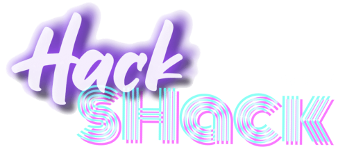

Welcome to the Hack Shack!¶
The recorded CSI workshop available in the Video Gallery is now available on-demand, as a self-paced and interactive workshop hosted by the HPE Developer Community.
All you have to do is register here.
A string of e-mails will setup your own sandbox to perform the exercises at your own pace. The environment will have a time restriction before resetting but you should have plenty of time to complete the workshop exercises.
During the workshop, you'll discover the basics of the Container Storage Interface (CSI) on Kubernetes. Here is a glance at what is being covered:
- Discover
StorageClasses - Create and assign a
PersistentVolumeClaimto a workload - Resize a
PersistentVolumeClaim - Expose a raw block device to a
Pod - Create a
VolumeSnapshotfrom aVolumeSnapshotClass - Clone
PersistentVolumeClaimsfrom an existing claim or aVolumeSnapshot - Declare an ephemeral inline volume for a
Pod - Annotate
PersistentVolumeClaimsto leverageStorageClassoverrides - Transparently provision an NFS server with the HPE CSI Driver and using the
ReadWriteManyaccess mode
When completed, please fill out the survey and let us know how we did!
Happy Hacking!